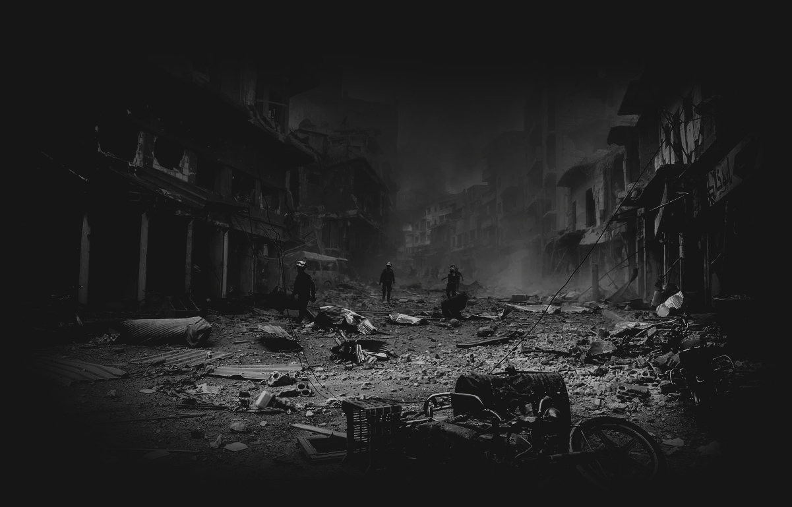
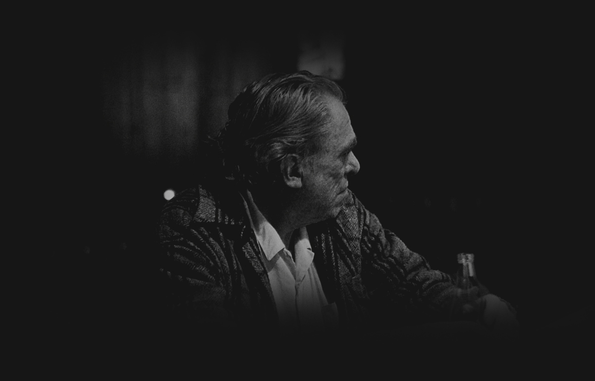

born like this
into this
as the chalk faces smile
as Mrs. Death laughs
as the elevators break
as political landscapes dissolve
as the supermarket bag boy holds a college degree
as the oily fish spit out their oily prey
as the sun is masked

we are born like this
into this
into these carefully mad wars

into the sight of broken factory windows of emptiness
into bars where people no longer speak to each other

into fist fights that end as shootings and knifings